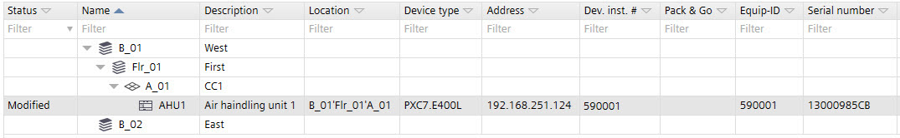
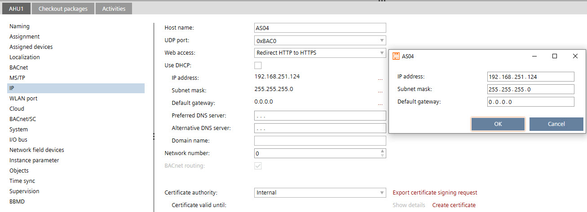

办公室设备的异地工程
该工程过程可以并行或顺序进行。唯一重要的是客户在工程的早期阶段就收到了项目密码。
Creating the project
- Create a project with a 4-rule password policy to access the device with the web interface.
- Send the project password to the customer.
- Do one of the following:
- Wait for the project information from the customer before you start with the project hierarchy.
- Create the project hierarchy. Rework the properties according to the information supplied by the customer in the Excel table.
- Start the engineering with the project hierarchy.
Creating the project hierarchy and configuring the device
- Create the project hierarchy according to the customer’s requirements.
- Create the device.
- Use the customers Excel table to add the following information:
- In the Dev.inst. # column, enter the device ID from customer’s Excel table.
- In Serial number column, enter the serial number from the customer’s Excel table.

- Do the following:
- for the device version ≤ 1.5: select the IPv4 tab.
- for the device version ≥ 1.6: select the Ports / network > LAN > IPv4.
- Clear the Use DHCP check box.
- In the IP address field, enter the IP address from customer’s Excel table.

- Do the following:
- for the device version ≤ 1.5: select the Cloud tab.
- for the device version ≥ 1.6: select the LAN > IPv4 > Cloud port.
- Select the Enable Cloud check box to activate the Cloud service.
- Start the device programming.